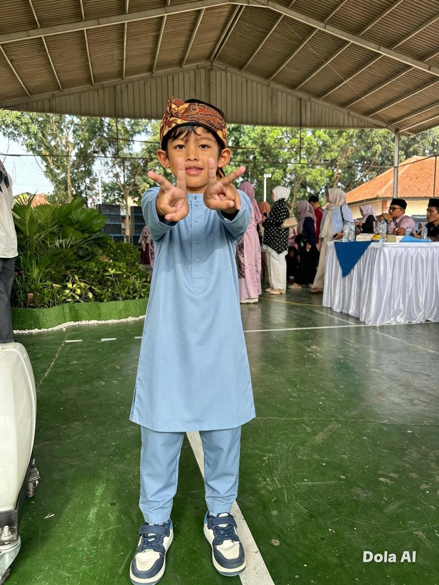

بِسْمِ اللَّهِ الرَّحْمَٰنِ الرَّحِيمِ
Undangan Tasyakuran
Khitan
Fathan Musa Arrayyan

✦ ۞ ✦
Dengan memohon rahmat dan ridha Allah SWT, kami bermaksud mengundang Bapak/Ibu/Saudara/i untuk hadir dalam acara tasyakuran khitan putra kami.
✦ ۞ ✦
Insya Allah diselenggarakan pada
Waktu Acara
SABTU
31
Oktober 2026
Pukul 10.00 WIB – Selesai
--Hari
--Jam
--Menit
--Detik
Kami menantikan kehadiran dan doa restu Anda.
Kami menantikan kehadiran Anda
Lokasi Acara
⌖
Sindanglaya
Jl. Cagak Pamoyanan, Desa Mekarmanik
Kec. Cimenyan, RT 03/RW 01 No. 7
Kabupaten Bandung, Jawa Barat
Patokan: Depan SDN Arcamanik 04
✦ ۞ ✦
Merupakan suatu kehormatan dan kebahagiaan bagi kami apabila Bapak/Ibu/Saudara/i berkenan hadir serta memberikan doa restu.
Hormat kami,
Bpk. Sopyan & Ibu Tita
Kel. Bpk. Tatang & Ibu Ai Titing
Kel. Alm. Bpk. Sait & Ibu Misna
✦ ۞ ✦